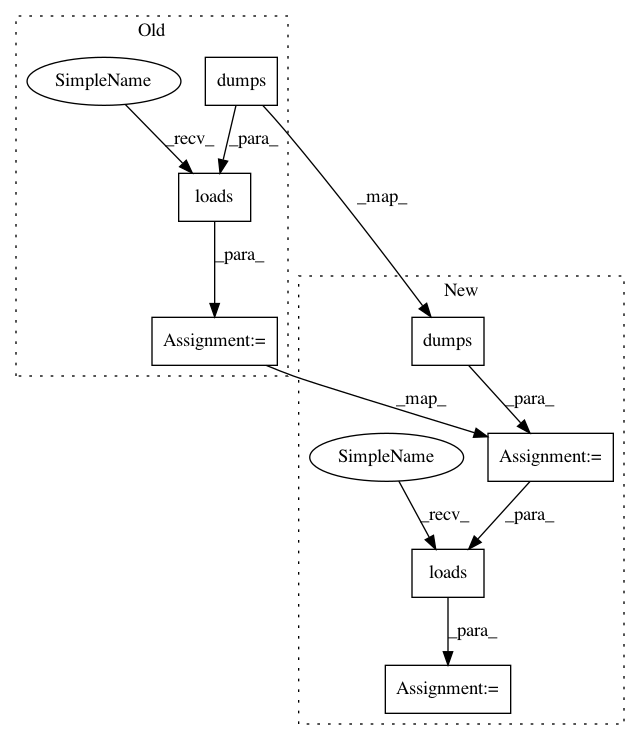

050f278d77b1a4982c14285fdc2c780d57d31194,tests/garage/tf/models/test_gaussian_mlp_model.py,TestGaussianMLPModel,test_without_std_share_network_is_pickleable,#TestGaussianMLPModel#Any#Any#Any#,205
Before Change
output1 = self.sess.run(outputs[:-1], feed_dict={input_var: self.obs})
with tf.Session(graph=tf.Graph()) as sess:
input_var = tf.placeholder(tf.float32, shape=(None, 5))
model_pickled = pickle.loads(pickle.dumps(model))
outputs = model_pickled.build(input_var)
output2 = sess.run(outputs[:-1], feed_dict={input_var: self.obs})
assert np.array_equal(output1, output2)
After Change
output1 = self.sess.run(outputs[:-1], feed_dict={input_var: self.obs})
h = pickle.dumps(model)
with tf.Session(graph=tf.Graph()) as sess:
input_var = tf.placeholder(tf.float32, shape=(None, 5))
model_pickled = pickle.loads(h)
outputs = model_pickled.build(input_var)
output2 = sess.run(outputs[:-1], feed_dict={input_var: self.obs})
assert np.array_equal(output1, output2)
In pattern: SUPERPATTERN
Frequency: 3
Non-data size: 7
Instances
Project Name: rlworkgroup/garage
Commit Name: 050f278d77b1a4982c14285fdc2c780d57d31194
Time: 2019-04-09
Author: ahtsans@gmail.com
File Name: tests/garage/tf/models/test_gaussian_mlp_model.py
Class Name: TestGaussianMLPModel
Method Name: test_without_std_share_network_is_pickleable
Project Name: rlworkgroup/garage
Commit Name: 050f278d77b1a4982c14285fdc2c780d57d31194
Time: 2019-04-09
Author: ahtsans@gmail.com
File Name: tests/garage/tf/models/test_gaussian_mlp_model.py
Class Name: TestGaussianMLPModel
Method Name: test_adaptive_std_is_pickleable
Project Name: rlworkgroup/garage
Commit Name: 050f278d77b1a4982c14285fdc2c780d57d31194
Time: 2019-04-09
Author: ahtsans@gmail.com
File Name: tests/garage/tf/models/test_gaussian_mlp_model.py
Class Name: TestGaussianMLPModel
Method Name: test_std_share_network_is_pickleable